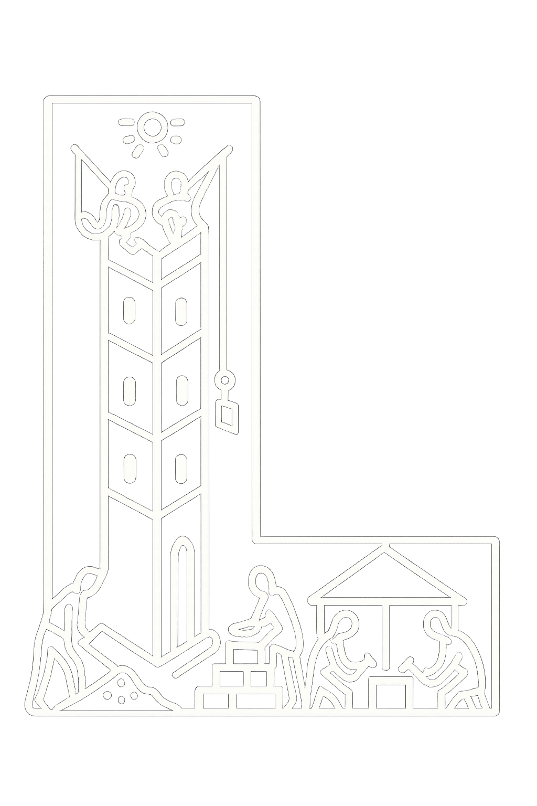

<!-- Injected by Asciidoctor because docinfo=shared -->
<header class="navbar">
    <div class="navbar-container">
        <div class="navbar-title">
            
            Embabel
        </div>
        <div class="navbar-actions">
            <a
                    href="http://docs.embabel.com/embabel-agent/api-docs/{embabel-agent-version}/index.html"
                    target="_blank"
                    rel="noreferrer noopener"
                    class="link-button"
            >
                <i class="fa fa-code api-icon"></i>
                API Docs
            </a>
            <a
                    href="https://github.com/embabel/embabel-agent"
                    target="_blank"
                    rel="noreferrer noopener"
                    class="link-button"
            >

                <svg xmlns="http://www.w3.org/2000/svg" viewBox="0 0 16 16" fill="currentColor" class="github-icon">
                    <path fill-rule="evenodd" d="M8 0C3.58 0 0 3.58 0 8c0 3.54 2.29
          6.53 5.47 7.59.4.07.55-.17.55-.38
          0-.19-.01-.82-.01-1.49-2.01.37-2.53-.49-2.69-.94-.09-.23-.48-.94-.82-1.13-.28-.15-.68-.52
          -.01-.53.63-.01 1.08.58 1.23.82.72 1.21
          1.87.87 2.33.66.07-.52.28-.87.51-1.07-1.78
          -.2-3.64-.89-3.64-3.95 0-.87.31-1.59.82
          -2.15-.08-.2-.36-1.01.08-2.1 0 0
          .67-.21 2.2.82A7.68 7.68 0 018 4.77c.68.003
          1.36.092 2 .27 1.53-1.04 2.2-.82
          2.2-.82.44 1.09.16 1.9.08 2.1.51.56.82
          1.27.82 2.15 0 3.07-1.87 3.75-3.65
          3.95.29.25.54.73.54 1.48 0 1.07-.01
          1.93-.01 2.19 0 .21.15.46.55.38A8.01
          8.01 0 0016 8c0-4.42-3.58-8-8-8z"></path>
                </svg>
                GitHub
            </a>
        </div>
    </div>
</header>

<style>

    .navbar-actions {
        display: flex;
        gap: 12px; /* spacing between buttons */
    }

    .navbar {
        position: sticky;
        top: 0;
        z-index: 40;
        width: 100%;
        background-color: #000000;
        border-bottom: 1px solid #334155;
    }

    .navbar-container {
        max-width: 1200px;
        height: 56px;
        margin: 0 auto;
        padding: 0 16px;
        display: flex;
        align-items: center;
        justify-content: space-between;
    }

    .navbar-title {
        display: flex;
        align-items: center;
        font-size: 1.25rem;
        font-weight: 700;
        text-decoration: none;
        color: #fafafa;
    }

    .navbar-logo { width: 40px; margin-right: 8px; }

    .link-button {
        display: flex;
        align-items: center;
        border: 1px solid #00000000;
        border-radius: 6px;
        padding: 8px 12px;
        font-size: 0.875rem;
        font-weight: 700;
        color: #27272a;
        text-decoration: none;
        background: #27272a;
        transition: background-color 0.2s ease;
    }

    .link-button:hover {
        background-color: #37373a;
    }

    .github-icon {
        width: 20px;
        height: 20px;
        margin-right: 8px;
    }

    /* Put this AFTER the import of asciidoctor-default.css */
    .navbar a,
    .navbar a:visited {
        color: #fff !important; /* white links */
        text-decoration: none; /* no underline */
    }

    .navbar a:hover,
    .navbar a:focus,
    .navbar a:active {
        color: #fff !important; /* keep white on hover/focus/active */
        text-decoration: none; /* keep underline off */
    }

    /* (If your icon should follow the link color) */
    .navbar .github-icon {
        fill: currentColor;
    }

    /* or ensure the SVG uses fill="currentColor" */

</style>
